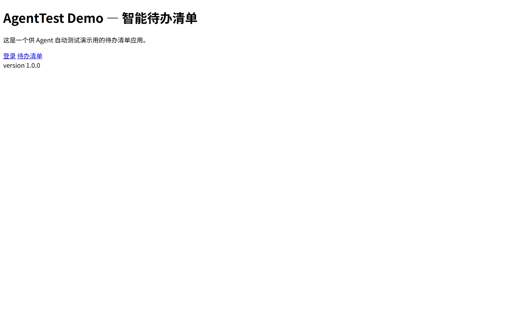
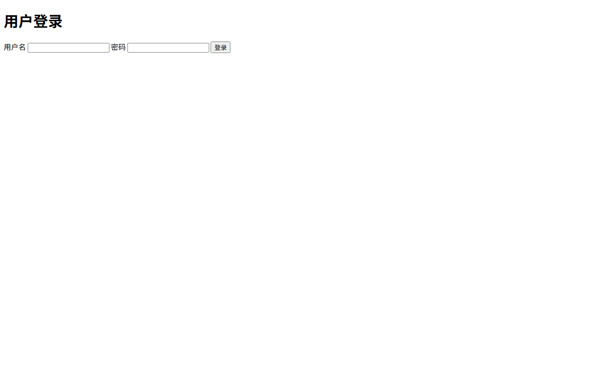

18
用例总数
16
通过
2
失败
2
发现缺陷
🐞 发现的缺陷（Agent 归因）
DEF-001 契约不符：非法参数应返回 400 却返回 500 high / contract
端点：API 非法 status 过滤应返回 400（契约要求）
证据：期望 400，实际 500；期望 400，实际 500
建议：按 OpenAPI 契约对非法参数返回 400，并在网关层拦截未预期异常
关联用例：API-006
DEF-002 缺失参数校验：空值被接受并写入数据 high / bug
端点：API 空 title 创建应返回 400（契约要求）
证据：期望 400，实际 200（脏数据已写入）
建议：服务端对 title 做非空校验，返回 400 且不落库
关联用例：API-008
📋 用例执行明细
| ID | 标题 | 类型 | 期望 | 实际 | 结果 | 耗时 | 备注 |
|---|---|---|---|---|---|---|---|
| API-001 | 健康检查应返回 200 | api | 200 | 200 {'status': 'ok', 'time': '2026-08-25T14:23:20.197353+00:00', 'version': '1.0.0'} | PASS | 22ms |
请求 GET /api/health -> 200，响应体: {'status': 'ok', 'time': '2026-08-25T14:23:20.197353+00:00', 'version': '1.0.0'}
|
| API-002 | 正确凭据登录应返回 200 和 token | api | 200 | 200 {'token': 'demo-token-123', 'user': 'admin'} | PASS | 4ms |
请求 POST /api/login -> 200，响应体: {'token': 'demo-token-123', 'user': 'admin'}
|
| API-003 | 错误密码登录应返回 401 | api | 401 | 401 {'error': 'invalid credentials'} | PASS | 3ms |
请求 POST /api/login -> 401，响应体: {'error': 'invalid credentials'}
|
| API-004 | 缺参数登录应返回 400 | api | 400 | 400 {'error': 'username and password are required'} | PASS | 4ms |
请求 POST /api/login -> 400，响应体: {'error': 'username and password are required'}
|
| API-005 | 查询待办列表应返回 200 | api | 200 | 200 {'count': 2, 'data': [{'created_at': '2026-08-25T14:23:20.121364+00:00', 'id': 1, 'priority': 'high', 'status': 'act | PASS | 4ms |
请求 GET /api/todos -> 200，响应体: {'count': 2, 'data': [{'created_at': '2026-08-25T14:23:20.121364+00:00', 'id': 1, 'priority': 'high', 'status': 'active', 'title': '学习 LangGraph 状态图'}, {'created_at': '20
|
| API-006 | 非法 status 过滤应返回 400（契约要求） | api | 400 | 500 {'error': 'internal error: unexpected status filter'} | FAIL | 924ms |
期望 400，实际 500
已重试 2 次
请求 GET /api/todos -> 500，响应体: {'error': 'internal error: unexpected status filter'}
|
| API-007 | 创建合法待办应返回 201 | api | 201 | 201 {'data': {'created_at': '2026-08-25T14:23:21.142471+00:00', 'id': 3, 'priority': 'high', 'status': 'active', 'title' | PASS | 4ms |
请求 POST /api/todos -> 201，响应体: {'data': {'created_at': '2026-08-25T14:23:21.142471+00:00', 'id': 3, 'priority': 'high', 'status': 'active', 'title': '由 Agent 自动测试创建的待办'}}
|
| API-008 | 空 title 创建应返回 400（契约要求） | api | 400 | 200 {'data': {'created_at': '2026-08-25T14:23:21.147401+00:00', 'id': 4, 'priority': 'medium', 'status': 'active', 'titl | FAIL | 3ms |
期望 400，实际 200
请求 POST /api/todos -> 200，响应体: {'data': {'created_at': '2026-08-25T14:23:21.147401+00:00', 'id': 4, 'priority': 'medium', 'status': 'active', 'title': '(empty)'}, 'warning': 'created with empty title'
|
| API-009 | 非法 priority 应返回 400 | api | 400 | 400 {'error': 'invalid priority'} | PASS | 23ms |
请求 POST /api/todos -> 400，响应体: {'error': 'invalid priority'}
|
| API-010 | 查询存在的待办应返回 200 | api | 200 | 200 {'data': {'created_at': '2026-08-25T14:23:20.121364+00:00', 'id': 1, 'priority': 'high', 'status': 'active', 'title' | PASS | 3ms |
请求 GET /api/todos/1 -> 200，响应体: {'data': {'created_at': '2026-08-25T14:23:20.121364+00:00', 'id': 1, 'priority': 'high', 'status': 'active', 'title': '学习 LangGraph 状态图'}}
|
| API-011 | 查询不存在的待办应返回 404 | api | 404 | 404 {'error': 'todo not found'} | PASS | 3ms |
请求 GET /api/todos/99999 -> 404，响应体: {'error': 'todo not found'}
|
| API-012 | 更新待办状态应返回 200 | api | 200 | 200 {'data': {'created_at': '2026-08-25T14:23:20.121364+00:00', 'id': 2, 'priority': 'medium', 'status': 'active', 'titl | PASS | 3ms |
请求 PATCH /api/todos/2 -> 200，响应体: {'data': {'created_at': '2026-08-25T14:23:20.121364+00:00', 'id': 2, 'priority': 'medium', 'status': 'active', 'title': '写 Agent 测试用例'}}
|
| API-013 | 非法状态更新应返回 400 | api | 400 | 400 {'error': 'invalid status'} | PASS | 3ms |
请求 PATCH /api/todos/2 -> 400，响应体: {'error': 'invalid status'}
|
| API-014 | 删除不存在的待办应返回 404 | api | 404 | 404 {'error': 'todo not found'} | PASS | 4ms |
请求 DELETE /api/todos/99999 -> 404，响应体: {'error': 'todo not found'}
|
| API-015 | 不稳定服务应最终成功（自动重试） | api | 200 | 200 {'flaky': True, 'ok': True} | PASS | 3ms |
请求 GET /api/flaky -> 200，响应体: {'flaky': True, 'ok': True}
|
| UI-001 | 首页应正确渲染标题与导航 | ui | AgentTest Demo [data-testid=page-title] [data-testid=nav-todos] | 全部断言通过 | PASS | 2320ms |
页面 http://127.0.0.1:5001/，DOM 摘要: AgentTest Demo — 智能待办清单 AgentTest Demo — 智能待办清单 这是一个供 Agent 自动测试演示用的待办清单应用。 登录 待办清单 version 1.0.0
 |
| UI-002 | 登录页应包含登录表单 | ui | 用户登录 [data-testid=login-form] [data-testid=input-username] | 全部断言通过 | PASS | 2440ms |
页面 http://127.0.0.1:5001/login，DOM 摘要: 登录 用户登录 用户名 密码 登录
 |
| UI-003 | 待办页应展示种子数据 | ui | [data-testid=todo-item] 学习 LangGraph 状态图 | 全部断言通过 | PASS | 2285ms |
页面 http://127.0.0.1:5001/todos，DOM 摘要: 待办清单 待办清单 学习 LangGraph 状态图 active 写 Agent 测试用例 active 由 Agent 自动测试创建的待办 active (empty) active
|
🗺️ 覆盖率
| 端点 / 页面 | 覆盖用例 |
|---|---|
| GET /api/health | API-001 |
| POST /api/login | API-002, API-003, API-004 |
| GET /api/todos | API-005, API-006 |
| POST /api/todos | API-007, API-008, API-009 |
| GET /api/todos/1 | API-010 |
| GET /api/todos/99999 | API-011 |
| PATCH /api/todos/2 | API-012, API-013 |
| DELETE /api/todos/99999 | API-014 |
| GET /api/flaky | API-015 |
| UI http://127.0.0.1:5001/ | UI-001 |
| UI http://127.0.0.1:5001/login | UI-002 |
| UI http://127.0.0.1:5001/todos | UI-003 |
🧠 Agent 思考轨迹（trace）
[planner] mock 生成 18 条测试用例
[executor] PASS API-001 健康检查应返回 200 (期望 200 / 实际 200 {'status': 'ok', 'time': '2026-08-25T14:23:20.197353+00:00', 'version': '1.0.0'} / 22ms)
[executor] PASS API-002 正确凭据登录应返回 200 和 token (期望 200 / 实际 200 {'token': 'demo-token-123', 'user': 'admin'} / 4ms)
[executor] PASS API-003 错误密码登录应返回 401 (期望 401 / 实际 401 {'error': 'invalid credentials'} / 3ms)
[executor] PASS API-004 缺参数登录应返回 400 (期望 400 / 实际 400 {'error': 'username and password are required'} / 4ms)
[executor] PASS API-005 查询待办列表应返回 200 (期望 200 / 实际 200 {'count': 2, 'data': [{'created_at': '2026-08-25T14:23:20.121364+00:00', 'id': 1, 'priority': 'high', 'status': 'active', 'title': '学习 LangGraph 状态图'}, {'created_at': '2026-08-25T14:23:20.121364+00:00 / 4ms)
[executor] FAIL API-006 非法 status 过滤应返回 400（契约要求） (期望 400 / 实际 500 {'error': 'internal error: unexpected status filter'} / 924ms / 重试2次)
[executor] PASS API-007 创建合法待办应返回 201 (期望 201 / 实际 201 {'data': {'created_at': '2026-08-25T14:23:21.142471+00:00', 'id': 3, 'priority': 'high', 'status': 'active', 'title': '由 Agent 自动测试创建的待办'}} / 4ms)
[executor] FAIL API-008 空 title 创建应返回 400（契约要求） (期望 400 / 实际 200 {'data': {'created_at': '2026-08-25T14:23:21.147401+00:00', 'id': 4, 'priority': 'medium', 'status': 'active', 'title': '(empty)'}, 'warning': 'created with empty title'} / 3ms)
[executor] PASS API-009 非法 priority 应返回 400 (期望 400 / 实际 400 {'error': 'invalid priority'} / 23ms)
[executor] PASS API-010 查询存在的待办应返回 200 (期望 200 / 实际 200 {'data': {'created_at': '2026-08-25T14:23:20.121364+00:00', 'id': 1, 'priority': 'high', 'status': 'active', 'title': '学习 LangGraph 状态图'}} / 3ms)
[executor] PASS API-011 查询不存在的待办应返回 404 (期望 404 / 实际 404 {'error': 'todo not found'} / 3ms)
[executor] PASS API-012 更新待办状态应返回 200 (期望 200 / 实际 200 {'data': {'created_at': '2026-08-25T14:23:20.121364+00:00', 'id': 2, 'priority': 'medium', 'status': 'active', 'title': '写 Agent 测试用例'}} / 3ms)
[executor] PASS API-013 非法状态更新应返回 400 (期望 400 / 实际 400 {'error': 'invalid status'} / 3ms)
[executor] PASS API-014 删除不存在的待办应返回 404 (期望 404 / 实际 404 {'error': 'todo not found'} / 4ms)
[executor] PASS API-015 不稳定服务应最终成功（自动重试） (期望 200 / 实际 200 {'flaky': True, 'ok': True} / 3ms)
[executor] PASS UI-001 首页应正确渲染标题与导航 (期望 AgentTest Demo [data-testid=page-title] [data-testid=nav-todos] / 实际 全部断言通过 / 2320ms)
[executor] PASS UI-002 登录页应包含登录表单 (期望 用户登录 [data-testid=login-form] [data-testid=input-username] / 实际 全部断言通过 / 2440ms)
[executor] PASS UI-003 待办页应展示种子数据 (期望 [data-testid=todo-item] 学习 LangGraph 状态图 / 实际 全部断言通过 / 2285ms)
[critic] 失败 2/18，归因出 2 个缺陷
[critic] DEF-001 [high/contract] 契约不符：非法参数应返回 400 却返回 500 @ API 非法 status 过滤应返回 400（契约要求）
[critic] DEF-002 [high/bug] 缺失参数校验：空值被接受并写入数据 @ API 空 title 创建应返回 400（契约要求）